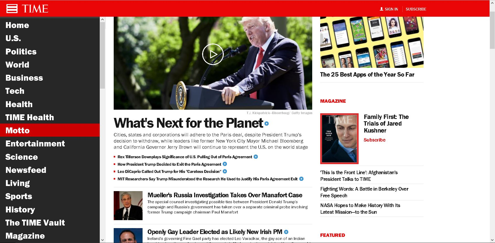
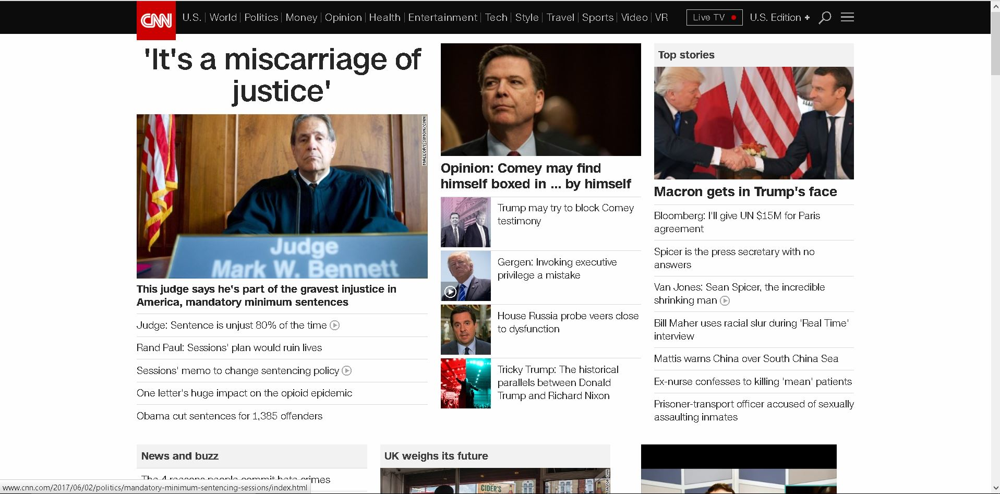

Five Principles
Affordance:
On this website we will focus mainly on the hyperlinks of websites. Hyperlinks
is an example of affordance since just like a handle affords pulling, a
hyperlink affords faster access to another website. It is also served to
cite sources and saves space on your word websites.
Hick's Law:

This page does a great job of representing Hick's Law. The reasoning behind
that statment is that this website involves a simple decision-making process
and it also involves looking through a menu and it also gives enough decsions
for their readers to make.
Mapping:
This site relates to mapping since it organizes everything a vistor to MSU's
sites might need/want to know. In this site a user might want to learn more about
MSU's academic information, so clicking the academic button will show
more information a user might expect to see.
Signal to Noise:

This site does a great job putting more signal than noise. There are only
relevant to their readers, in this case there only political topics and
no irrelevant topics such as ads are in site.
Modularity:
On the left side of the page shows a great example of Modularity. It takes
all of the materials for a class and divides them up into modules to make the
design of the course easier for the student to manage. Thus, combining all
of the modules will help the students be sucessful in MI 349.